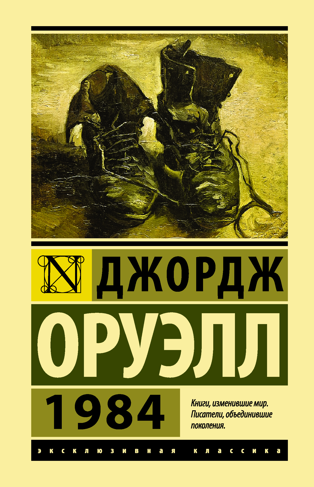

Джордж Оруэлл "1984"
Своеобразный антипод второй великой антиутопии XX века — «О дивный новый мир» Олдоса Хаксли. Что, в сущности, страшнее: доведенное до абсурда «общество потребления» — или доведенное до абсолюта «общество идеи»? По Оруэллу, нет и не может быть ничего ужаснее тотальной несвободы...
